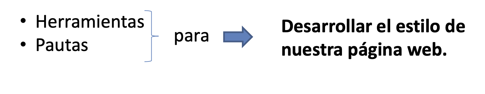

El diseño de un sitio es fundamental para la presentación y navegabilidad de un sitio Web, por ello se procura que cada componente de una página no sea solo llamativo, sino que sea de fácil comprensión para todos los tipos de usuario.
CSS por medio de sus selectores permite un control de los estilos de los componentes, pero este proceso de diseño en CSS puede llevar muchas horas de trabajo y lineas de código, además de un conocimiento avanzado de diseño. Por ello la importancia de las herramientas
tecnólogicas CSS, o Frameworks, los cuales cuentas con muchos diseños prestablecidos de diferentes tipos de componentes ya codificados y muchas veces listo para usar.

Figura 2.2.1 - Esquema de Frameworks
Definición de frameworks CSS. (2020). [Figura]. http://idesweb.es/. https://rua.ua.es/dspace/bitstream/10045/26796/1/CSS%20-%20Frameworks.pdf
Ventajas de Usar Frameworks
- Ahorro de código y tiempo
- Grillas y layouts que pueden ayudar a organizar mejor el contenido de un sitio
- Diseños CSS avanzados, ya prestablecidos
- Garantiza una compatibilidad con los navegadores
- Cuentan con soporte de comunidad y estan en constante desarrollo de nuevos diseños
Desventajas de Usar Frameworks
- Al ser utilizados en muchas partes, los estilos de un sitio serán iguales a muchos otros
- Si se quiere personalizar un componente, se tendrá que tener un conocimiento solido en el framework
- Se importan muchos estilos y librerías, de los cuales muchos no serán utilizados
1.5. HTML y CSS. (2016). uniwebsidad. https://uniwebsidad.com/libros/xhtml/capitulo-1/html-y-css